|
 THE RISING SEA DRAGON IN ASIA - 2005 UPDATE By Jeff Head - Last Update: January 26, 2013 |
 |
             
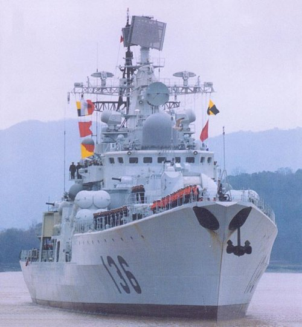 As an update to the original "Rising Sea Dragon in Asia", that I publiushed in January of 2004 (and have been writing and warning about since 2000), I offer this latest update as of July of 2005. This report is fairly short and broad, and I believe does not contain the detail necessary to reflect the true scope of the emerging threat. But it does clearly indicate the nature and size of the current Red Chinese buildup, and their is only one principle power that such a buildup can be directed at, the United States military. Regarding the continuing naval buildup, the Chinese have already built and launched two of the brand new, very modern, Aegis type Lanzhou Class destroyers, two of the new Guangzhou Class guided missile destroyers, two new Ma'anshan Class guided missile frigates, four of the new large Type 73-III Amphibious Assault ships (that's right, four in a very short time frame and more building...can you guess what these are intended for?), and a class of very modern diesle-electric attack subs. In addition, the west has now seen another new class, dubbed the Type 51C that was just launched in December of 2004 in the Dalian, Liaoning Province. Another area air defense destroyer similar to the Type 52C, Lanzho class, this new class is similar in appearance to the Arleigh Burke class original batch destroyers, and is based on the late 1990's Luhai class hull. It has an Aegis type air defense capability, but no helo facilities, while the two new Type 52C's are similar to the Arliegh Burke Batch IIA ships, with onboard helicopter landing and housing facilities. All of this is in addition to acquiring four very modern and capable Hangzhou Class destroyers from Russia and a total of twelve very modern Russian diesel-electric subs either already delivered or on order from Russia, as well as currently building their own new and modern classes of nuclear attack subs and ballistic missile submarines. Based on the latest information, it appaears that the 1st Type 093 SSN (nuclear attack sub) was launched in late 2002 and has been undergoing operational testing since and is probably completely operational. It may well have been the mystery sub that violated Japanese waters and was picked up off of Guam. A second new PLAN Type 093 SSN could easily have been launched by now. Apparently the 1st Type 094 SSBN balistic missile submarine was launched in August 2004. Since the recent test of their new SLBM in June 2005, the JL-2 (with an 8,000 km range and up to three mirv warheads for each missile) was launched from a submarine, it was undoubtedly this submarine that launched that test into the Mongolian desert. All of this with the continuing heavy research into aircraft carrier design and/or refitting.
The efforts continue unabated as the Red Chinese continue to build or aquire ELEVEN new classes of ships simultaneously at a rapid pace. Eleven new classes of ships at once represents a HUGE outlay in technology and capital across the board. It is unheard of and is representative of the massive arms build-up the Red Chinese are embarked upon with their new found wealth. If continued, it can have but one goal in mind, a direct challenge for naval dominance in the Pacific Rim and beyond. That challenege is a direct one to the United States Navy.
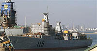 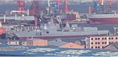 The construction of the new area air defense, Shenyang Type 51C Class destroyer, 1st launched December 2004, 2nd building. 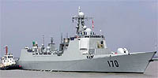 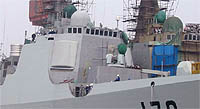 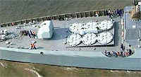 The new Lanzhou Class (Type 52C) Aegis-like destroyer. 1st commissioned July 2004, second in early 2005, 3rd building. 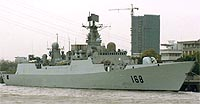 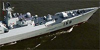 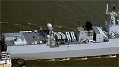 The new Guangzhou Class (Type 52B) Guided Missile Destroyer. 1st commissioned in July 2004, second in service in early 2005. 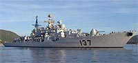 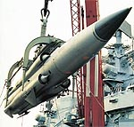 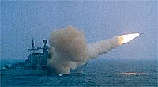 The new Hangzhou Class (Type 951/EM) guided missile destroyers. Four acquired from Russia in the last five years, two already in service, two more in 2005. They carry the Russian Sunburn or Moskit cruise missiles, designed to attack US Aircraft Carriers. 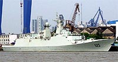 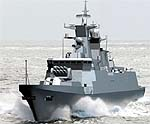 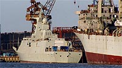 The new Ma'anshan Class (Type 054) Guided Missile frigates. Two launched in late 2003, will be in service in early 2005. 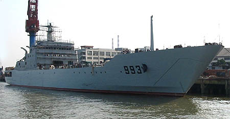 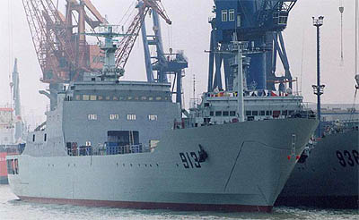 Two of the new Type 73 Amphibious Assault Ship class, of which three have already been built. 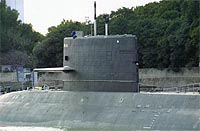 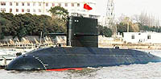 The new Yuan Class SSK diesel/electric attack submanrine. 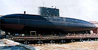 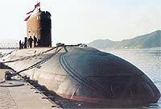 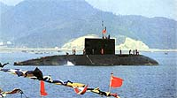 The new Russian acquired Kilo Class SSK diesle/electric attack submarines, of which four have been acquired and EIGHT MORE are on order. 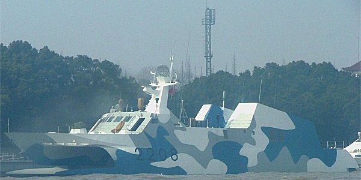 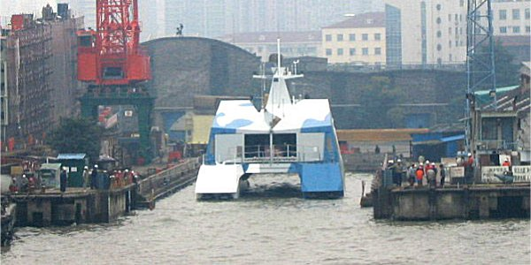 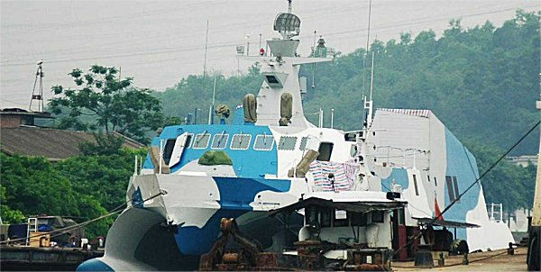 New stealth/catamaran guided missile Fast Attack Craft (FAC) in series production. Four already complete. 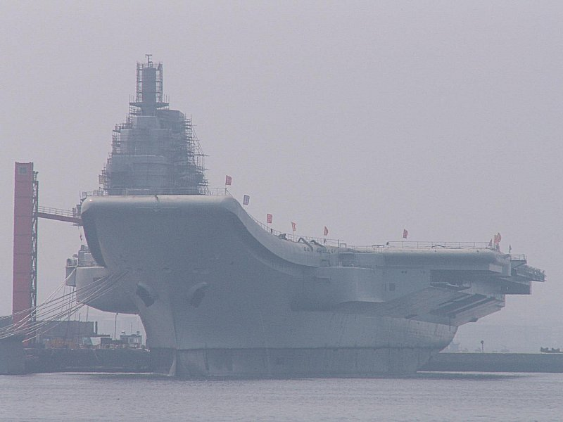 Continued work and outfitting of the former Russian Vayrag at the Dalian shipyards. For many more pictures of the Chinese Navy buildup, please visit the following link: At the same time, the PLAN Naval Air force is growing in strength, numbers, quality and modernization. 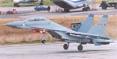 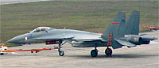 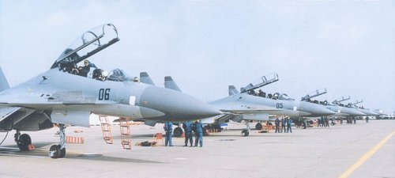 Red Chinese SU-30 and SU-27SK (J11) and SU-27 aircraft. 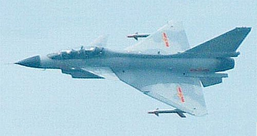 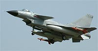 The chinese Produced J-10 attack fighter. As these ships are produced in numbers and as the Chinese continue with their across the board naval buildup and their carrier development plans towards ultimately lauching their own, the balance of power in the China Sea and western Pacific is going to hang in the balance. Do not forget, the Chinese have purchased and are studying and apparently refitting western style and Russian aircraft carriers. Their intentions in this regard, with the production of all the support and defense ships necessary to form carrier battle groups of their own is clear. Even without those groups, they are poducing a formidable force to challenge western naval forces in the inner island chain in the western Pacific. While the Chinese experience level with this equipment is lacking and will be very much inferior to the decades of practical experience the United States Navy has, there is no doubt that the Chinese are embarked on a path to challenge that experience and heretofore dominance of the U.S. Navy in the region at some point. If within range of large numbers of land-based aircraft and missiles, and if coupled with modern, capable weapons systems like the Sunburn or Moskit missiles and perhaps supercavitiating torpedo technology, a credible threat to American naval supremecy in the western Pacific could be posed in the next few years...and this does not even address their continued rapid buildup of ballistic missiles and modernization program across the board of their land based armed forces, which are proceeding at a similar pace as that described here regarding their navy and naval air forces. Although the hefty 12-14% increase in direct military expenditures of the Red Chinese (and this does not include dual use and so-called private sector input to the defense apparatus-just remember, in the Red Chinese system, there is no real private sector) represents a small proportion of US Military outlays, remember as well that a significant portion of western outlays goes towards relatively high salaries, benefits, and health care costs that the Chinese system is not burdened with. In terms of outlays towards pure military weapons systems directly, the Chinese are rapidly catching up with western numbers. All of this bears very serious consideration and planning. While we do so, consider this: As stated, the Chinese are currently building and launching eleven modern, entire classes of major combatant vessels...simultaneously. This is a monumental achievement and compares to the United States Navy which is currently building and launching three new classes of major combatants (the Virginia class subs, the San Antonio class LPDs, and the continuing Burk class destroyers) with plans for two to three more U.S. classes in the future Clearly the Chinese and the PLAN are serious about their future naval capabilities in the China Sea and western Pacific and are rapidly building up across the board to implement them. This should be reminiscent to our senior citizens who experienced it, or anyone who has studied history, of the rapid buildup of the Japanese and German military in the 1930s. We all know where that led. Again, there can only be one power that the Red Chinese intend to, and must, confront if conflict over geo-political policy comes into play...and that is the U.S. Navy. Such tremendous development, building and launching of vessels indicate that they intend to do just that and their intentions, capabilities and funding in this regard cannot be underestimated. | ||
Copyright © 2005-2012 by Jeff Head
JEFFHEAD.COM Hit Counter
Jeff Head's Naval Sites Hit Counter
|